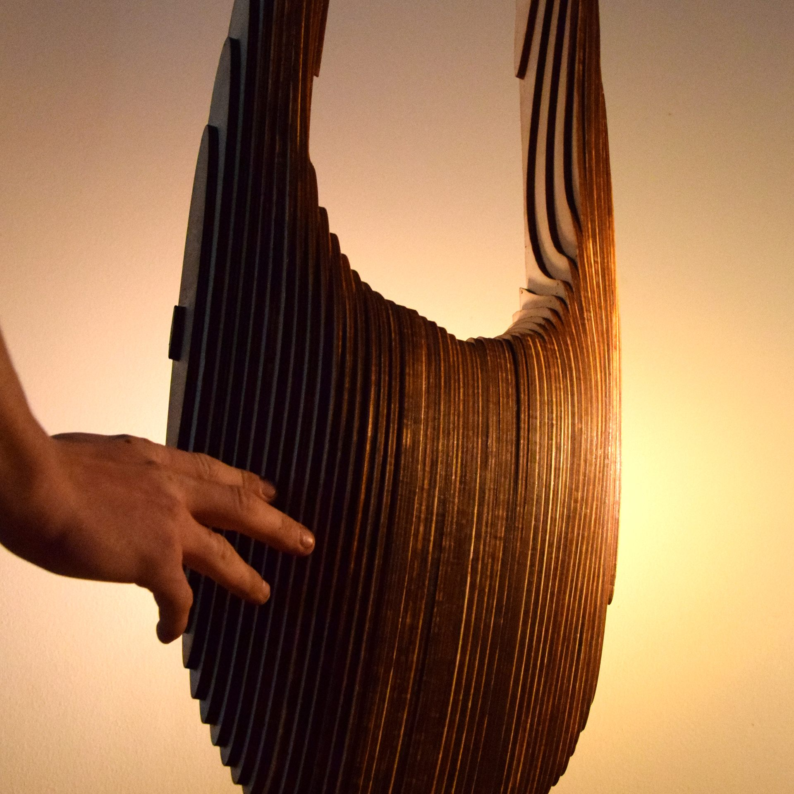
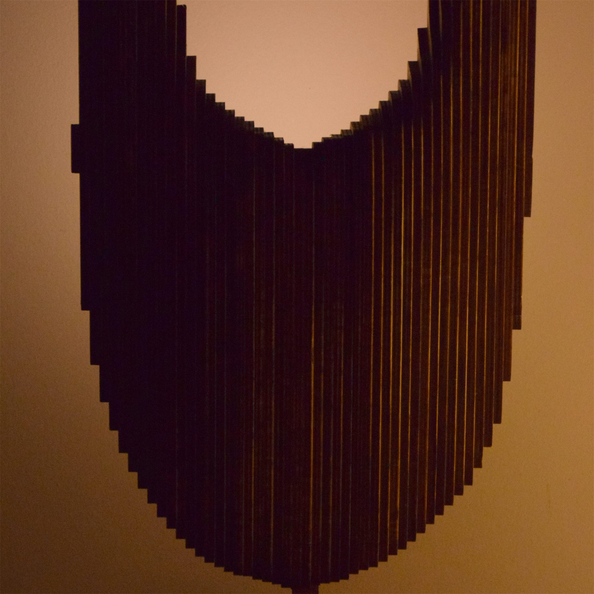
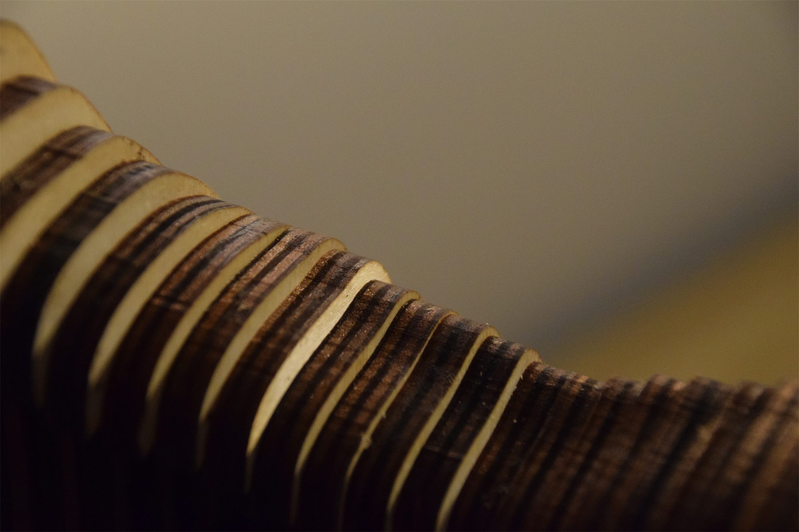
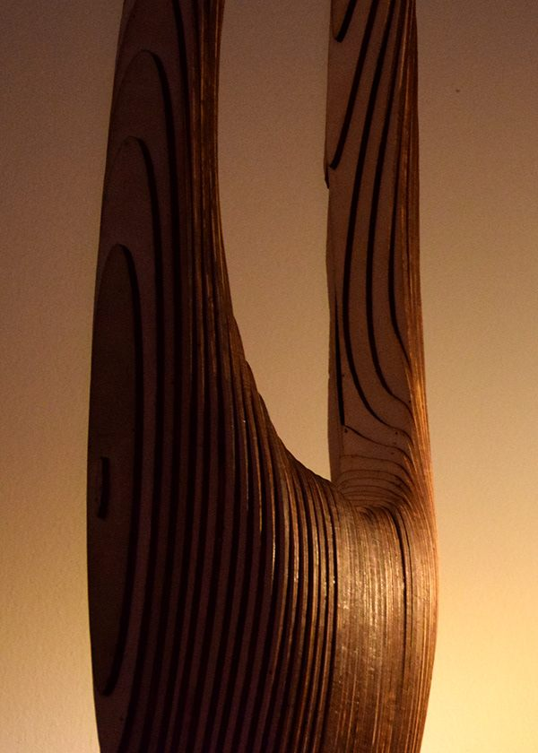

The Entomon light is a feature lamp that is made to bring organic elements to a space through the materials, shape and diffusion of light. Lamps and sconce lighting are often set to one level of luminescence, with very few unique or interesting designs that challenge what a lamp should look like.
The Entomon has utilised the theory of biomimicry through imitating the shape and elements of invertebrates and crustaceans. This adaptation of visual design creates a reflection of organic life, and by using the natural tones and colours of wood as the base material, a calmer, warmer diffusion of light is able to create a difference in the atmosphere that a standard hall sconce does not create.


The wooden elements of the light became the more notable trait in the lamp, defining the shape through the limitations it brought to the production process. Creating the stepping-down feature you first notice when viewing the Entomon.
Early research into the Entomon studied the effects of bioluminescence and the connections between light and biology. Visual developments for the Entomon stemmed from insect anatomy and deep-sea organisms. The segmentation and indented elements that made up shells and carapace influenced a variety of visual exploration, eventually resulting in the final design.

The initial testing and prototyping had the Entomon creating moody environments through cooler refraction of light. Using the blues and greens that bioluminescent organisms used, as researched during the ideation process. Establishing the experience a user has while they were embracing the atmosphere as the main focus for the future of the design.
Initial sketches have the Entomon standing around 8 ft tall (around 2.5 metres), with production costs limiting this concept in the later stages. Its silhouette really came into light when I was wandering home along a slabbed pathway, and took a liking to the monolithic nature of the long concrete tiles - joining the concepts into what became the Entomon.


The materials were a limitation of the production means to begin with. The pricing of timber at the lengths and widths required was far too out of reach for a one-off concept piece. The natural conclusion was to use laser-cut boards, shaving and oiling them to bring out the natural wooden aesthetics. The assembly was a tedious process of puzzling together nearly 100 pieces of oddly shaped wood. Slowly combining to form the final Entomon piece.
The limitations that this project faced brought a more authentic and genuine reality to the piece, as the components were each worked upon to emphasise the colour and textures present within. Instead of relying heavily on already spectacular materials, it took the combination of accessible materials to create something that ended up feeling much more unique.